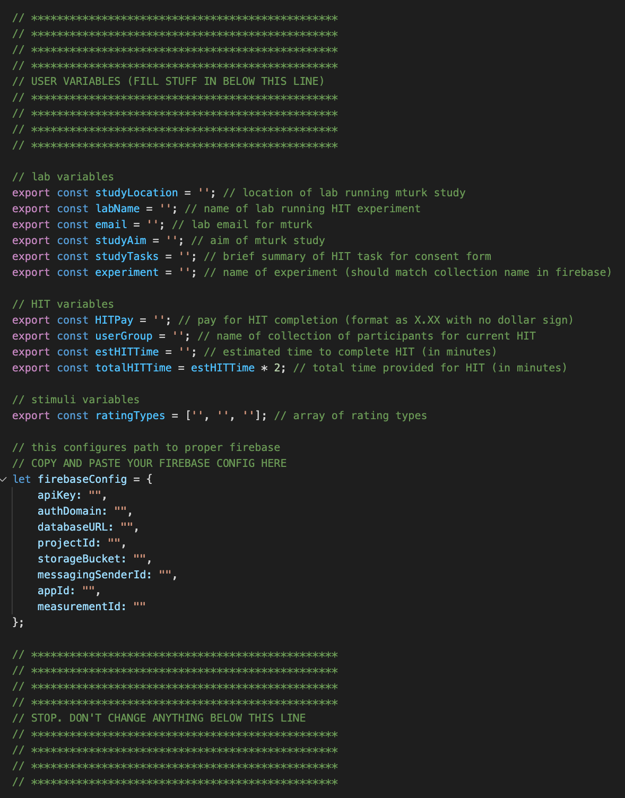
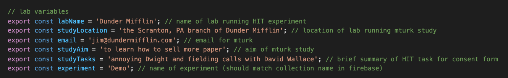

Editing the utils.js file¶
continuous-rater has been configured to require minimal coding to repurpose. To customize the app for your needs, simply open src/utils.js in the continuous-rater folder, and edit it in the text editor of your choosing. This is what it looks like in VSCode:

There are several sections that need attention. When filling in these variables, make sure to pay attention to the language provided in the following examples, and format your information in the same way.
Lab variables¶
studyLocation– physical location of your lab/group (e.g., the Scranton, PA branch of Dunder Mifflin)labName– the name of your lab/group (e.g., Dunder Mifflin)email– the best email address for participants to use to contact you with questions/concerns (e.g. jim@dundermifflin.com)studyAim– the main goal of the mturk study (e.g., to learn how to sell more paper)studyTasks– brief summary of task for inclusion in mturk advertisement and consent form… NOT full instructions (e.g., annoying Dwight and fielding calls with David Wallace)experiment– the name of your experiment (which should match the name of your outermost collection in Firebase and will be used to access this collection)
If you populate the src/utils.js file with the above examples, the file should look like this:

and will result in a consent page like this:

HIT variables¶
HITPay– compensation for completion of task. Format as X.XX (e.g., 2.50), and do not include a $ symboluserGroup– name of Firebase collection of participants for current task. Can be whatever you want(e.g., MTurk Group)estHITTime– estimated time it should take workers to complete task (in minutes; e.g., 5)
Stimuli variables¶
ratingTypes– a list of the types of ratings you are interested in receiving. Each rating should be enclosed in single quotes (e.g., [‘amused’, ‘afraid’] ) and can be as long or short as you like
Firebase variables¶
let firebaseConfig = {
apiKey: "",
authDomain: "",
databaseURL: "",
projectId: "",
storageBucket: "",
messagingSenderId: "",
appId: "",
measurementId: ""
};
The above configuration information can be accessed via the Firebase console (you already saved this code snippet locally in step 9 of Initializing Cloud Firestore section) inside a Firebase project you have started. Copy and paste your unique config information over this blank one in the file.
Save this file with the newly populated variables!